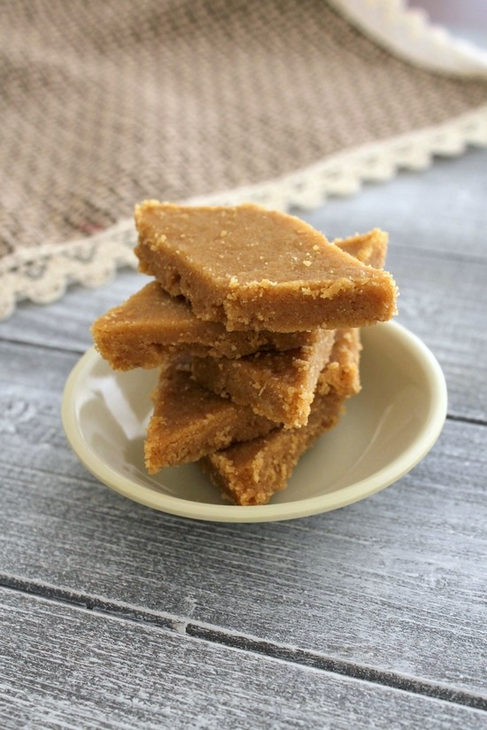

Recipe of Sukhdi

Ingredients
-
⅓ cup Ghee (Clarified butter) in semi solid form.
-
⅔ cup Whole wheat flour (Chapati atta)
-
¼ cup Jaggery (Gur) grated or powdered
Procedure
-
First, prepare the plate or thali to set the sukhdi. Grease the plate (bottom and sides) well with
ghee.
-
Take the ghee in a pan. Turn the heat on low-medium.
-
Once the ghee is melted and gets slightly hot, add wheat flour.
-
Mix with a spatula. it will be like the thick, lumpy paste.
-
Roast it with stirring constantly for 4-5 minutes. Or till the atta gets some color and you will get
a toasted aroma of the flour.
-
Roast it with stirring constantly for 4-5 minutes. Or till the atta gets some color and you will get
a toasted aroma of the flour.
-
As soon as the flour is roasted, turn off the stove.
-
Then add jaggery. It will melt right away. Quickly mix it.
-
Immediately pour into the prepared plate, even out the surface using back of the spatula or back of
the steel glass or katori.
-
Let it cool down slightly. While it is still warm, Slice into desired shape and size.
Watch the video!!!!